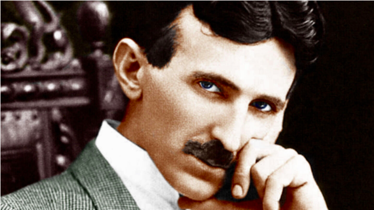

Did you know? During the 1890s Mark Twain struck up a friendship with inventor Nikola Tesla. Twain often visited him in his lab, where in 1894 Tesla photographed the great American writer in one of the first pictures ever lit by phosphorescent light.
Tesla was born in 1856 in Smiljan, Croatia, then part of the Austro-Hungarian Empire. His father was a priest in the Serbian Orthodox church and his mother managed the family’s farm. In 1863 Tesla’s brother Daniel was killed in a riding accident. The shock of the loss unsettled the 7-year-old Tesla, who reported seeing visions—the first signs of his lifelong mental illnesses.
Tesla studied math and physics at the Technical University of Graz and philosophy at the University of Prague. In 1882, while on a walk, he came up with the idea for a brushless AC motor, making the first sketches of its rotating electromagnets in the sand of the path. Later that year he moved to Paris and got a job repairing direct current (DC) power plants with the Continental Edison Company. Two years later he immigrated to the United States.
Tesla arrived in New York in 1884 and was hired as an engineer at Thomas Edison’s Manhattan headquarters. He worked there for a year, impressing Edison with his diligence and ingenuity. At one point Edison told Tesla he would pay $50,000 for an improved design for his DC dynamos. After months of experimentation, Tesla presented a solution and asked for the money. Edison demurred, saying, “Tesla, you don’t understand our American humor.” Tesla quit soon after.
After an unsuccessful attempt to start his own Tesla Electric Light Company and a stint digging ditches for $2 a day, Tesla found backers to support his research into alternating current. In 1887 and 1888 he was granted more than 30 patents for his inventions and invited to address the American Institute of Electrical Engineers on his work. His lecture caught the attention of George Westinghouse, the inventor who had launched the first AC power system near Boston and was Edison’s major competitor in the “Battle of the Currents.”
Westinghouse hired Tesla, licensed the patents for his AC motor and gave him his own lab. In 1890 Edison arranged for a convicted New York murderer to be put to death in an AC-powered electric chair—a stunt designed to show how dangerous the Westinghouse standard could be.
Buoyed by Westinghouse’s royalties, Tesla struck out on his own again. But Westinghouse was soon forced by his backers to renegotiate their contract, with Tesla relinquishing his royalty rights.
 In the 1890s Tesla invented electric oscillators, meters, improved lights and the high-voltage transformer known as the Tesla coil. He also experimented with X-rays, gave short-range demonstrations of radio communication two years before Guglielmo Marconi and piloted a radio-controlled boat around a pool in Madison Square Garden. Together, Tesla and Westinghouse lit the 1891 World’s Columbian Exposition in Chicago and partnered with General Electric to install AC generators at Niagara Falls, creating the first modern power station.
In 1895 Tesla’s New York lab burned, destroying years’ worth of notes and equipment. Tesla relocated to Colorado Springs for two years, returning to New York in 1900. He secured backing from financier J.P. Morgan and began building a global communications network centered on a giant tower at Wardenclyffe, on Long Island. But funds ran out and Morgan balked at Tesla’s grandiose schemes.
Tesla lived his last decades in a New York hotel, working on new inventions even as his energy and mental health faded. His obsession with the number three and fastidious washing were dismissed as the eccentricities of genius. He spent his final years feeding—and, he claimed, communicating with—the city’s pigeons.
Tesla died in his room on January 7, 1943. Later that year the U.S. Supreme Court voided four of Marconi’s key patents, belatedly acknowledging Tesla’s innovations in radio. The AC system he championed and improved remains the global standard for power transmission.